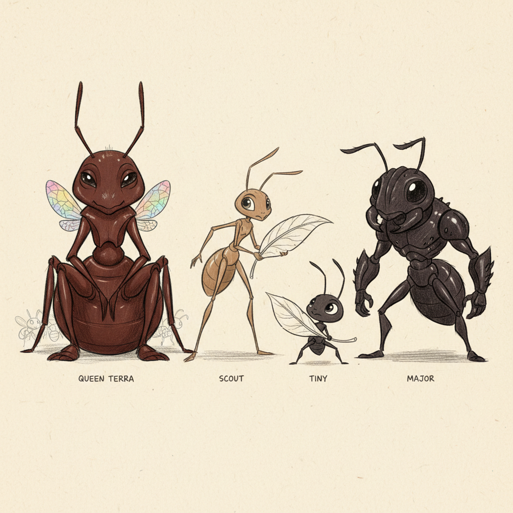
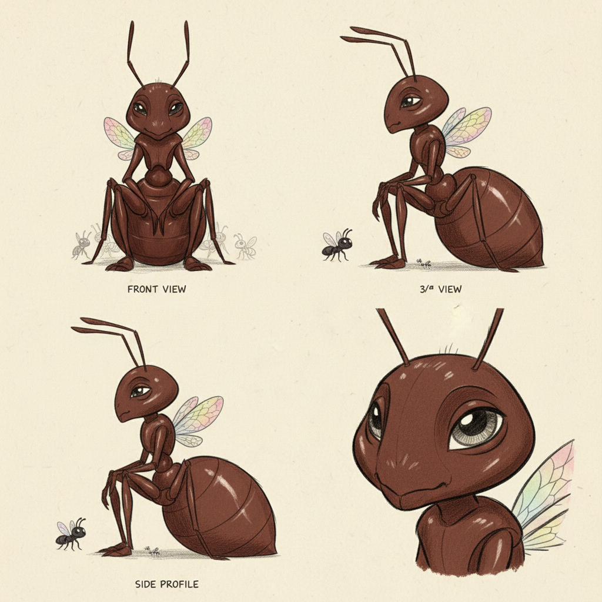
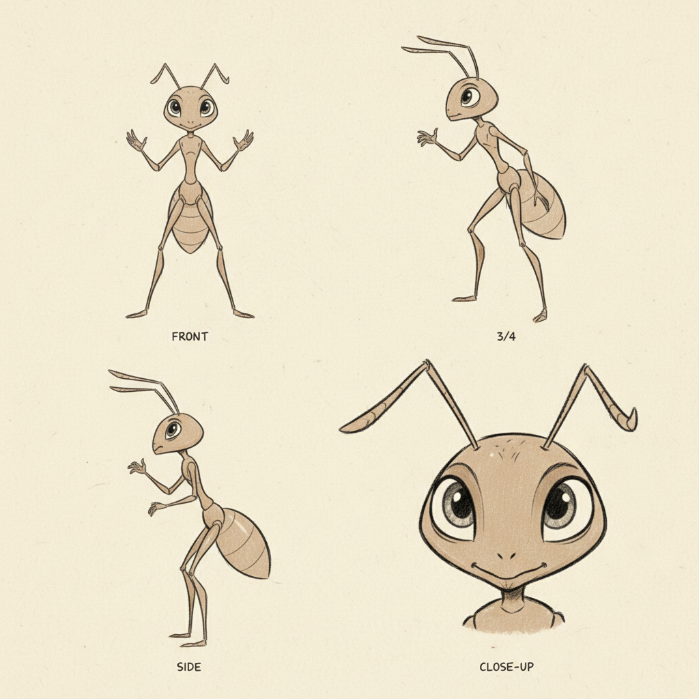
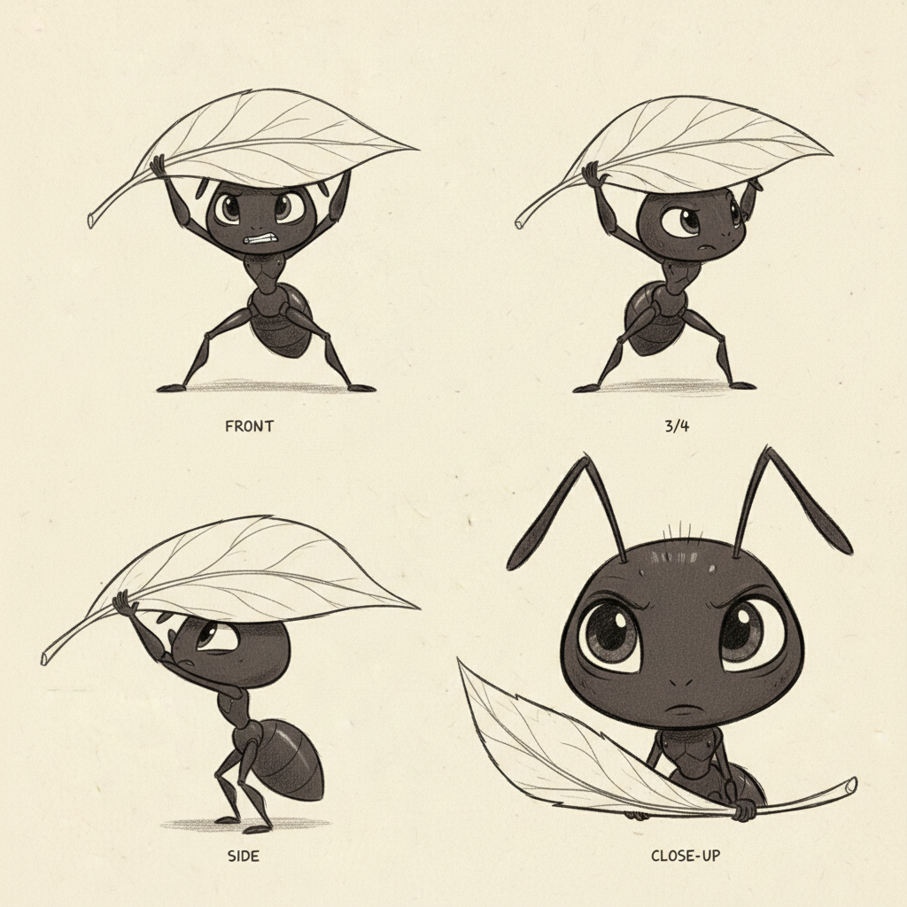
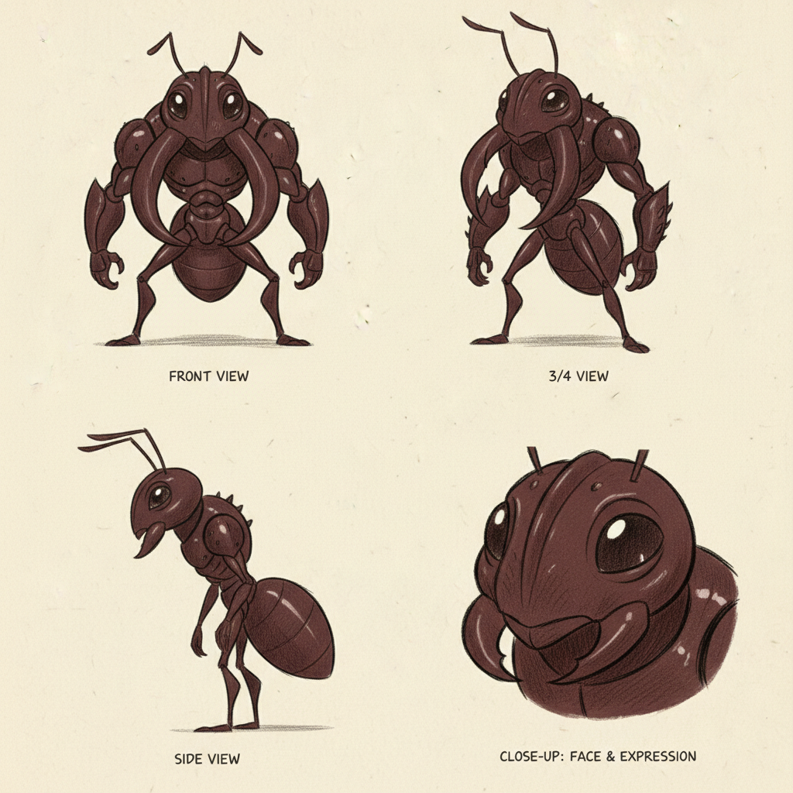
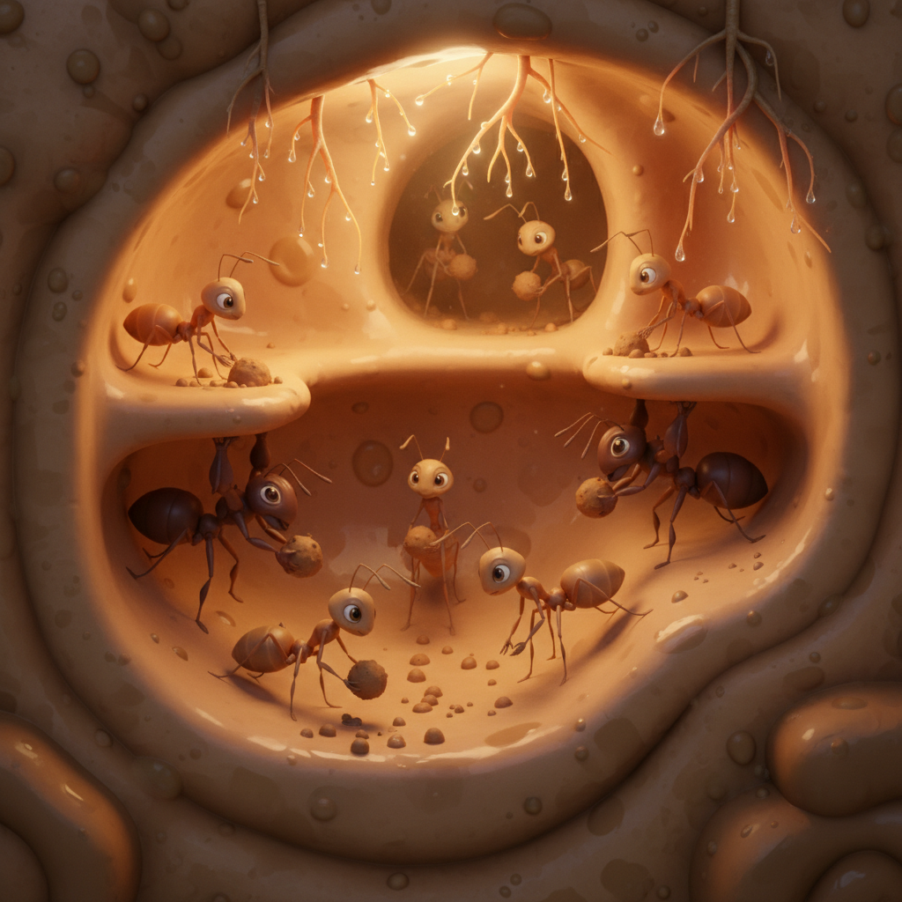
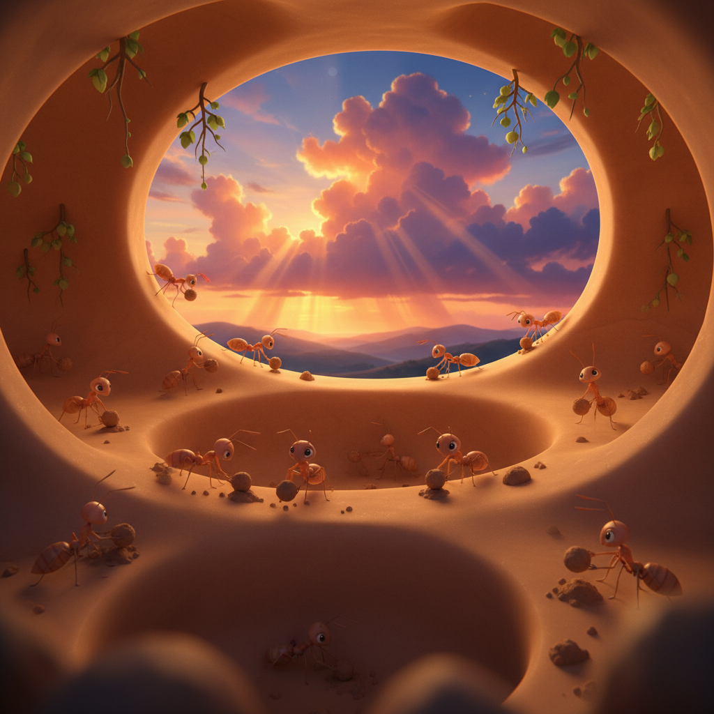
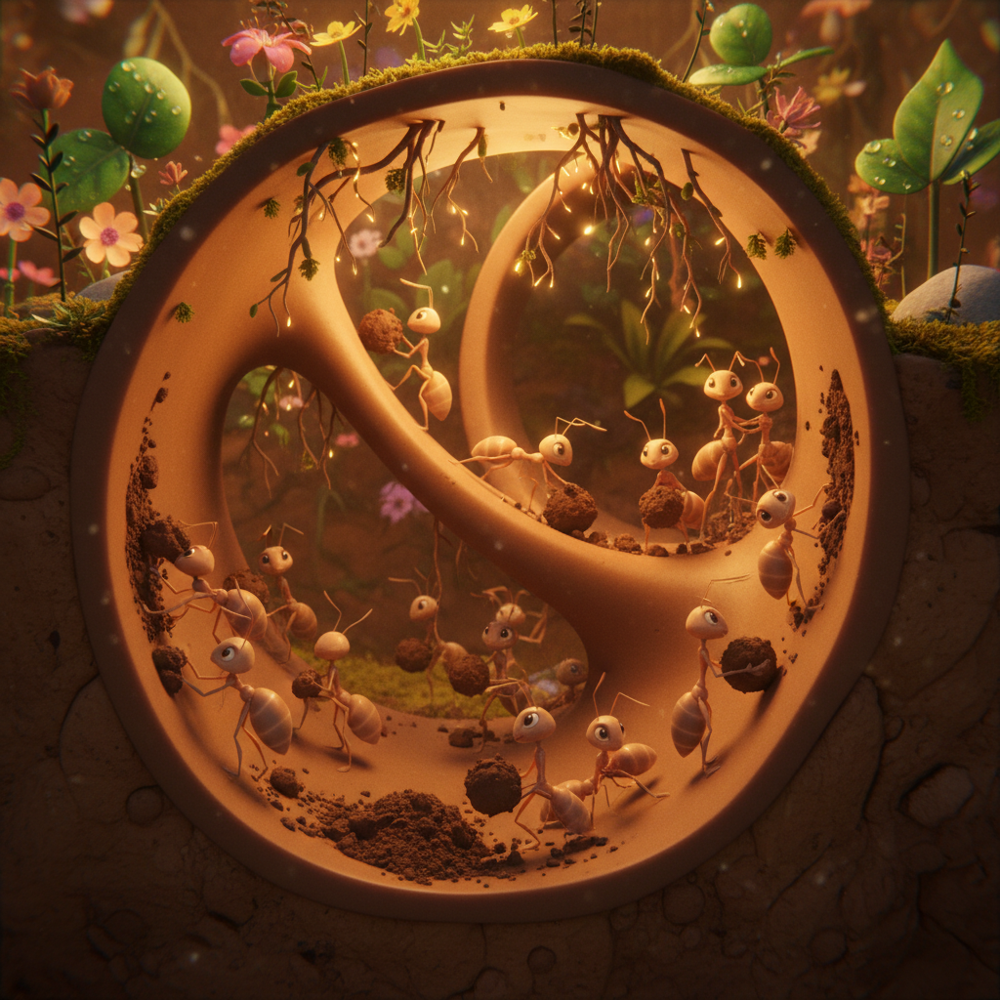
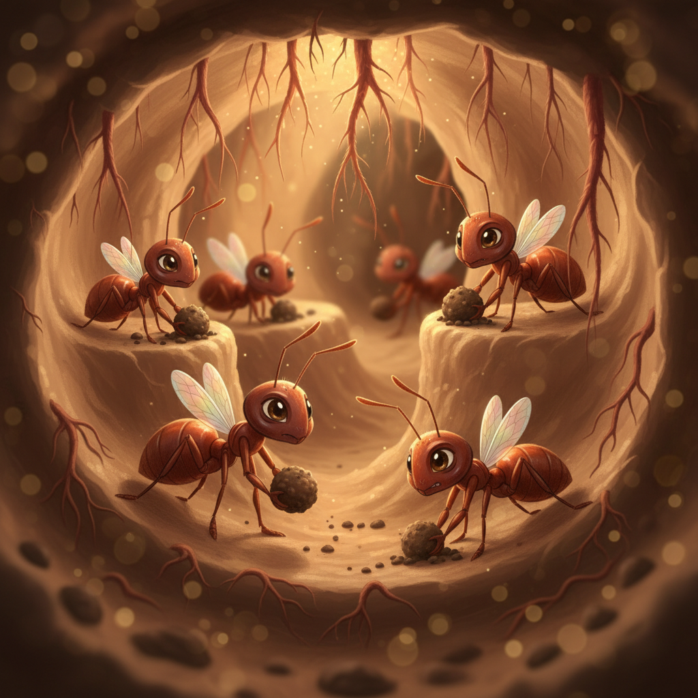
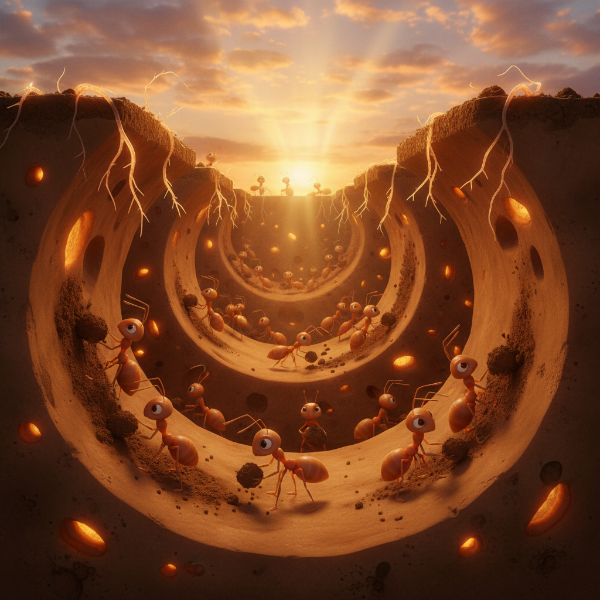

Ants: The Tiny Builders
Follow Queen Terra, Scout, Tiny, and Major as they build and protect their incredible underground ant colony through the power of teamwork
Preface
Welcome to a world hidden right beneath your feet! Under every garden, every sidewalk, and every forest floor, millions of ants are building incredible underground cities. These tiny creatures are some of the strongest, smartest, and most organized animals on Earth.
In this adventure, you'll meet Queen Terra and her amazing colony. You'll discover how ants talk to each other with special scents, build tunnels deeper than a house is tall, and carry objects fifty times their own weight. That's like you carrying a car over your head!
Every ant in the colony has an important job, and when they all work together, they can do things that seem impossible. Get ready to shrink down and explore the most incredible tiny world you've ever seen!
Art Direction
Pre-Production Pipeline
Step 0: Storyline
pending (0 attempts)
pendingStep 1: Unified Cast Sheet
approved (1 attempts)
ApprovedStep 2: Character Sheets
approved
Queen Terra: approvedScout: approved
Tiny: approved
Major: approved
Step 3: Mood Proposals
approved
Moods: translucency, lush-botanicalStep 1: Unified Cast Sheets

approved.jpg (APPROVED) unified-cast-v1.jpg
unified-cast-v1.jpg
Step 2: Queen Terra Sheets

approved.jpg (APPROVED) sheet-v1.jpg
sheet-v1.jpg
Step 2: Scout Sheets
 approved.jpg (APPROVED)
approved.jpg (APPROVED)

sheet-v1.jpgStep 2: Tiny Sheets
 approved.jpg (APPROVED)
approved.jpg (APPROVED)

sheet-v1.jpgStep 2: Major Sheets
 approved.jpg (APPROVED)
approved.jpg (APPROVED)

sheet-v1.jpgStep 3: Pixar Mood Proposals
 APPROVED
APPROVED

1-translucency-botanical
2-epic-intimate
3-golden-botanical
4-translucency-intimate
5-epic-goldenCharacter Cast
Queen Terra
The ant queen, largest ant in the colony, deep reddish-brown, wise ancient eyes, sits in the heart of the nest with a slightly iridescent wing remnant on her back
queen-terra-portrait.jpgScout
Explorer ant, lean and fast, lighter brown color, antennae always pointing forward alertly, one antenna slightly bent from an adventure
scout-portrait.jpgTiny
Young worker ant, smallest of the group, darker color, eager to help but clumsy, always carries leaves twice her size
tiny-carries-leaf.jpgMajor
Soldier ant, biggest worker with oversized mandibles, dark reddish-black, stands guard at tunnel entrances, intimidating but gentle with colony-mates
major-guards-gate.jpgScene Plan (12 scenes)
The Colony Awakens
As the first golden rays of sunshine warm the earth, something magical happens beneath the meadow. Deep underground, in a city of tunnels and chambers bigger than your bedroom, thousands of tiny feet begin to stir. The ants are waking up! One by one, they stretch their six legs, wiggle their antennae, and get ready for the busiest day you can imagine. Up on the surface, little doors in the anthill open, and the first brave ants peek outside. A new day in the colony has begun!
Meet Queen Terra
Deep in the very heart of the colony lives the most important ant of all — Queen Terra! She is the mother of every single ant in the colony, and she is MAGNIFICENT. Queen Terra is the biggest ant you've ever seen, with a deep reddish-brown body that gleams like polished wood. Her eyes are old and wise — she has seen a thousand sunrises from underground. On her back, you can see something special: a tiny, shimmering wing remnant that sparkles like a rainbow. Long ago, she flew through the sky to find this perfect spot and start her family. 'Welcome, little ones,' she says in her warm, deep voice. 'Every one of you is important.'
Scout Sets Out!
Meet Scout — the bravest explorer in the whole colony! Scout is lean and fast, with lighter brown coloring that helps her blend with the dry leaves. Her antennae are always pointing forward, feeling and smelling everything around her. Look closely — see how one of her antennae has a little bend in it? She got that on her very first adventure, when she bravely explored a garden all by herself! 'Today I'm going to find the biggest, most delicious food for the colony!' Scout announces, wiggling her bent antenna. And off she goes, racing into the enormous world of grass and soil!
The Greatest Discovery!
Scout races through the forest of grass blades, climbing over pebbles like mountains and jumping over puddles like lakes. Then she smells something AMAZING. She follows her nose — or rather, her antennae — and finds... a STRAWBERRY! It's fallen from the garden above, and it's the biggest, most beautiful red thing Scout has ever seen. It's a hundred times bigger than she is! 'The colony is going to FEAST!' Scout dances in a happy circle. But how will she tell everyone where it is? Scout has a plan — she'll leave a trail of special scent that every ant can follow!
The Trail of Scents
Scout races back to the colony, dragging her belly along the ground as she runs. She's leaving behind a special invisible perfume called a PHEROMONE — a chemical message that says 'FOOD THIS WAY!' When she reaches the colony, she dances excitedly. 'Follow me! Follow me!' The other ants touch her antennae and smell the message. One by one, they line up behind Scout and march out in a perfect single-file line. Each ant follows the scent trail exactly, adding more scent as she goes. The more ants that walk the trail, the STRONGER the smell gets! It's like a highway made of perfume!
Tiny's Big Job
Little Tiny is the SMALLEST ant in the whole colony, but she has the BIGGEST heart! Today is her first day carrying food back to the nest, and she has found a piece of leaf that is TWICE her size. She grabs it with her tiny mandibles and lifts it over her head. WOBBLE! She tips left. WOBBLE! She tips right. The leaf spins her in a circle! 'I... can... DO this!' Tiny grunts. The other ants cheer her on. 'You've got it, Tiny!' Step by wobbly step, she marches toward home. The leaf is SO heavy, but Tiny never gives up. She finally makes it to the tunnel entrance — and all the ants cheer!
Major Guards the Gate
At the main entrance of the colony stands MAJOR — the biggest, strongest ant you've ever seen! His head is enormous, and his mandibles (that's what ant jaws are called) are so big they look like they could cut through anything. Major looks SO scary from the outside! But here's a secret: Major is the GENTLEST ant in the colony. When little Tiny wobbles past with her giant leaf, Major softly guides her through. 'Great job, little one,' he rumbles. But when a stranger ant from another colony tries to sneak in — Major blocks the way! 'This is OUR home,' he says firmly. Nobody gets past Major.
Building the Underground City
Underground, the ants are building something INCREDIBLE. Thousands of workers dig with their strong mandibles, scooping out tiny balls of earth and carrying them to the surface. They're building tunnels that connect hundreds of rooms — nurseries for babies, storage rooms for food, resting chambers, and even a special room for Queen Terra! The tunnels go deeper than a tall person! Some rooms have perfect ventilation to keep the air fresh. Scout plans the routes while Tiny and her friends do the digging. Every tunnel is smooth and perfectly round. It's like an entire city — and ANTS built it, grain by grain!
The Fungus Garden
Here's the most AMAZING secret in the ant world: some ants are FARMERS! Deep in the colony, there's a special room that looks like a magical garden. Remember all those leaves Tiny and the others carried in? They don't eat the leaves — they CHEW them up into tiny pieces and use them to grow FUNGUS! The white, fluffy fungus is the ants' favorite food. They tend their garden like tiny farmers, pulling out weeds, adding fresh leaves, and harvesting the yummy fungus when it's ready. Tiny is learning to be a fungus gardener, and she's SO gentle with the delicate white puffs. 'It's like growing a cloud!' she says dreamily.
Carrying Giants!
Here comes the BEST part about ants — they are the STRONGEST animals for their size on the ENTIRE PLANET! An ant can carry FIFTY TIMES her own body weight. That would be like YOU picking up a school bus! When Scout found that enormous strawberry, it took a team of ants to carry it home. Some push from behind, some pull from the front, and some lift from underneath. 'One, two, THREE — LIFT!' calls Scout. The strawberry rises off the ground! Even little Tiny helps, pushing with all her might from the back. 'TEAMWORK!' they all shout together. And inch by inch, the giant strawberry moves toward home.
The Nursery
The most precious room in the entire colony is the nursery. Here, special nurse ants take care of Queen Terra's eggs and babies. The tiny white eggs are so small you'd need a magnifying glass to see them! The nurses carry them gently in their mandibles, moving them to warmer or cooler spots depending on what the babies need. Tiny has been chosen as a nursery helper today! She holds a single tiny egg so carefully, like it's the most precious thing in the world — because it IS. 'Hello, little one,' Tiny whispers to the egg. 'I was small once too, and look at me now — I can carry a whole leaf!' The egg seems to wiggle in response.
All Together Strong!
As the golden sunset paints the sky, look at what these tiny ants have built TOGETHER! Queen Terra watches from her chamber with pride. Scout has found enough food for everyone. Tiny proved that even the smallest ant makes a BIG difference. And Major keeps them all safe. Thousands of ants, each one as small as a grain of sand, built an underground city, grew their own food, raised their babies, and protected their home — all by working TOGETHER. No ant could do it alone, but together? Together they can move mountains — one grain at a time. And THAT is the most amazing thing about ants: alone they are tiny, but together they are UNSTOPPABLE!
Viewer Details
Mandible Power
Look at Major's massive mandibles — those are his jaws! Ant mandibles are like a Swiss Army knife: they can cut leaves, dig tunnels, carry food, feed baby ants, and fight off enemies. Major's mandibles are especially large because he's a soldier ant. The inside edges are serrated like a tiny saw blade, perfect for gripping and cutting. Some ants can even snap their mandibles shut faster than almost any movement in the animal kingdom!
Amazing Antennae
Scout's antennae are her most important tools! Each antenna has a special elbow joint in the middle that lets it bend and reach in all directions. The tip is covered in thousands of tiny scent receptors that can detect chemical signals in the air. Ants use their antennae to smell, taste, touch, and even measure things! When two ants meet, they touch antennae to share information — it's like a secret handshake that tells them everything about each other.
Armor Exoskeleton
Queen Terra's body is covered in an exoskeleton — a hard outer shell made of a material called chitin (say 'KY-tin'). It's like wearing a suit of armor on the outside instead of having bones on the inside! The exoskeleton is divided into plates connected by flexible joints, so ants can still move freely. It protects them from damage and keeps water inside their bodies. As ants grow, they shed their exoskeleton and grow a bigger one — like getting a new suit of armor!
Grip and Climb
How does Tiny walk up walls and even upside down on ceilings? Each ant foot has two tiny hooks called tarsal claws, plus a sticky pad between them called an arolium. The claws grip rough surfaces like bark and soil, while the sticky pad works on smooth surfaces like leaves and glass. This dual system means ants can walk on almost ANYTHING — vertical walls, upside down, even on water surface tension! That's why you see ants climbing everywhere without ever falling.
Fun Facts
Super Strength
Ants can carry objects 50 times their own body weight! That's like a human picking up a car and carrying it over their head. Their secret is their exoskeleton — a hard outer shell that acts like a suit of armor and gives their muscles incredible leverage. Some species can even carry 100 times their weight when working together!
Mega Colonies
Some ant colonies can have MILLIONS of members! The largest known ant supercolony stretches over 6,000 kilometers across southern Europe — that's wider than the United States! These massive colonies have multiple queens and billions of workers. A single colony of leafcutter ants can strip a whole tree of its leaves in one night!
Scent Language
Ants talk to each other using special chemicals called pheromones! They leave scent trails on the ground to say 'food this way,' release alarm scents that mean 'danger!', and even have a special smell that says 'I'm from this colony.' An ant's antennae can detect incredibly tiny amounts of these chemicals — it's like having a super-powered nose on your head!
Tiny Farmers
Leafcutter ants have been farming fungus for over 50 MILLION years — that's way before humans even existed! They cut leaves, carry them underground, chew them into a paste, and grow a special fungus on top. They even use natural antibiotics to keep their gardens disease-free. They were the world's first farmers, and they're still some of the best!
Hidden Generation Sections
MACRO CLOSE-UP photograph-style detail shot — a single ant HEAD showing the massive mandibles (jaws) in extraordinary de...
Ref: major-guards-gateMACRO CLOSE-UP photograph-style detail shot — a single ant antenna in extreme detail, showing the segmented structure wi...
Ref: meet-scoutMACRO CLOSE-UP photograph-style detail shot — the surface of an ant's reddish-brown exoskeleton showing the segmented ar...
Ref: meet-queen-terraMACRO CLOSE-UP photograph-style detail shot — a single ant FOOT gripping onto a blade of grass, showing the tiny hooks (...
Ref: tinys-big-jobEducational illustration showing an ant lifting an enormous weight above its head with '50x' written in big friendly num...
Educational illustration showing an enormous ant colony from above, with millions of tiny ants covering the ground, a ma...
Using the ant from reference, educational illustration showing an ant leaving a glowing scent trail on the ground, with ...
Ref: meet-scoutEducational illustration showing leaf-cutter ants in their underground fungus garden, a side-by-side comparison with a h...